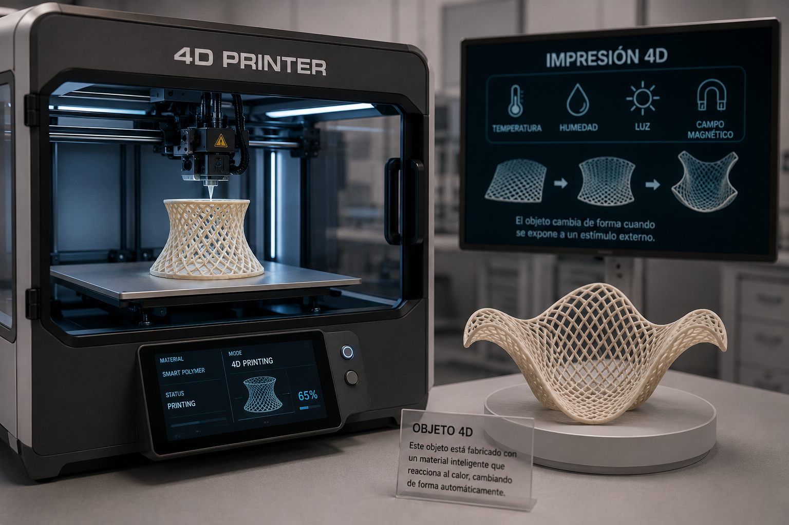

El mundo y la ciencia avanzan sin cesar. Cada día vemos nuevas tecnologías que mejoran la calidad de vida.
Una de ellas es la impresión 3D o fabricación aditiva . Esta tecnología cubre las deficiencias de las tecnologías de fabricación actuales y
se ha mejorado mediante la introducción de materiales inteligentes, como polímeros inteligentes . El producto resultante puede adaptarse a
condiciones ambientales como cambios de temperatura, alteraciones de la compresión, etc. Estas respuestas dieron lugar a una tecnología de
impresión 3D avanzada llamada impresión 4D . Las tecnologías de impresión 3D y 4D han encontrado aplicaciones en todos los ámbitos y tamaño
s de industria, desde el hogar hasta las grandes empresas. A pesar de todas las ventajas de estas tecnologías, aún existen algunas
limitaciones, como la baja velocidad de impresión. Pero esto no detiene su progreso y promoción. En esta revisión, nuestro objetivo
es abarcar conocimientos generales sobre la impresión 3D y 4D y sus aplicaciones recientes en diversos campos.
Impresión 3D

Impresión 4D
ORIGEN
Impresión 3D:
Charles "Chuck" Hull es reconocido como el padre de la impresión 3D. En 1983 inventó la estereolitografía (SLA)
—la primera tecnología de fabricación aditiva— y posteriormente fundó la empresa 3D Systems en 1986 para comercializar esta innovación.
Impresión 4D:
La impresión 4D fue introducida en 2013 por el informático y arquitecto estadounidense Skylar Tibbits, fundador
y codirector del Laboratorio de Autoensamblaje del MIT (Massachusetts Institute of Technology)